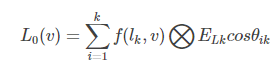

公式：
w = A / r * r
A: 视锥与球相交的面的面积
r: 球的半径
由此可知，立体角是与球的大小无关的。
微分式代换
dω=sinθdθdψ
推导过程 ：
立体角的定义可知 : w = A / r * r
那么 : dw = dA / r * r
由球面微分的代换式（将x、y换元然后雅克比行列式）： dA=sinθr*rdθdψ
平面角就是一个顶点两条射线围成的那个角度，它的大小等于单位圆上的弧长，单位是弧度或者度。
立体角就是从一个顶点发出的一个锥体所围成的一个三维角度，它的大小等于单位球上的面积，单位是球面度，一个单位球的面积是4π，因此一个球面的立体角就是4π。
w = A / r * r
A: 视锥与球相交的面的面积
r: 球的半径
由此可知，立体角是与球的大小无关的。
dω=sinθdθdψ
推导过程 ：
立体角的定义可知 : w = A / r * r
那么 : dw = dA / r * r
由球面微分的代换式（将x、y换元然后雅克比行列式）： dA=sinθr*rdθdψ
也叫辐射通率，光子都是有能量的，辐射通量就是指光在单位时间内通过表面的能量的总量.
ϕ = dQ / dt
辐照度指的是单位时间内通过单位面积的能量的总量，也可以看做是辐射通量对面积的密度.
E = dϕ / dA
现在需要考虑这个面积指的是哪个面积，如果光是垂直设向这个表面的，很显然，面积就是表面的面积，但是如果光是倾斜地射向表面的呢？如图所示，倾斜照射的情况下，相同的辐射通量的光到达的表面变大了，也就是说这个时候辐照度是变小了的，因此在光线倾斜的时候，应该只考虑表面垂直与光线的那一部分面积，即将表面投影到与光线垂直的地方，用式子来表示这一关系：
E0 = dϕ / dA0 = dϕ / dAcosθ= E / cosθ
E0 : 光线完全垂直照射到表面时的辐照度.
cosθ : 光线与法线的夹角
因此倾斜光线的辐照度为E = E0 cosθ。
现在假设一个点光源放在一个球的球心位置，那么它朝着各个方向的辐射通量都是相同的，那么通过整个球面的辐照度就是E = ϕ /4πr^2，当也就是说辐照度实际上是与球的半径的平方成反比，也就是说光的衰减与距离的平方成正比。
表示辐射通量对面积的密度，不同的是辐照度衡量的是到达表面的光，而辐出度表示的是离开表面的光.
如果要衡量一个点的辐射通量密度该怎么做？显然不能用辐照度来衡量，因为一个点是没有面积的，点的辐照度肯定为零。前文所描述立体角时所说的实际在做光线追踪的时候，对于一个像素，是将其看成一个点，然后求光线与几何体的交点，然后再在这个交点的位置做一个半球，将光线视作一个锥体射向了交点，这样做是因为光线不仅有方向也有粗细，它不只是一条简单的射线。那么也就是说，可以对一个点衡量它的单位立体角的辐射通量，那么这就是辐射强度的定义。
I = dϕ / dw
立体角是不随距离的变化而变化的，因此辐射强度也不随着距离的变化而变化。
L = E / dw = ϕ / dA0 dw
L是辐射率，A0是投影面积.
BRDF只是一个反映入射光和反射光关系的函数.
BRDF的全名是bidirectional reflectance distribution function,它的定义式为:
f(l,v) = dL0(v) / dE(l)
其中L0(v)是出射光的辐射率，E(l)是入射光的辐照度。
BRDF的非微分形式为:
f(l,v) = L0(v) / ELcosθi
分子就是出射光在v方向上的辐射率，分母是入射光l在垂直于它的平面上的辐照度。 而我们着色要做的是求出射光的辐射率，因此我们的目标是利用已知的f(l,v)来计算L0(v)即
其中k是光源的编号 。⨂符号表示各个分量相乘，因为BRDF和辐射率、辐照度都是三维向量，分别表示RGB的数据。